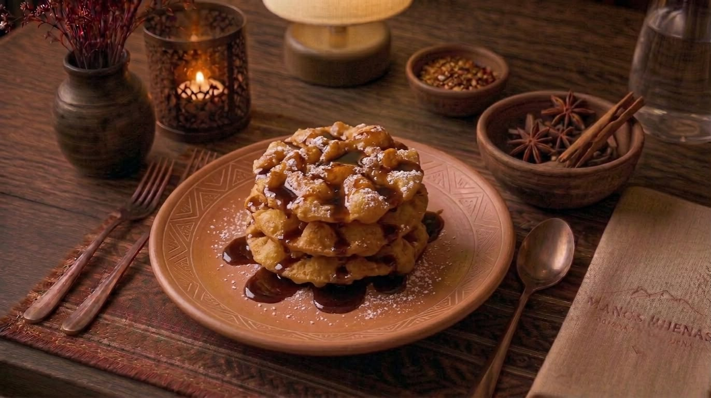
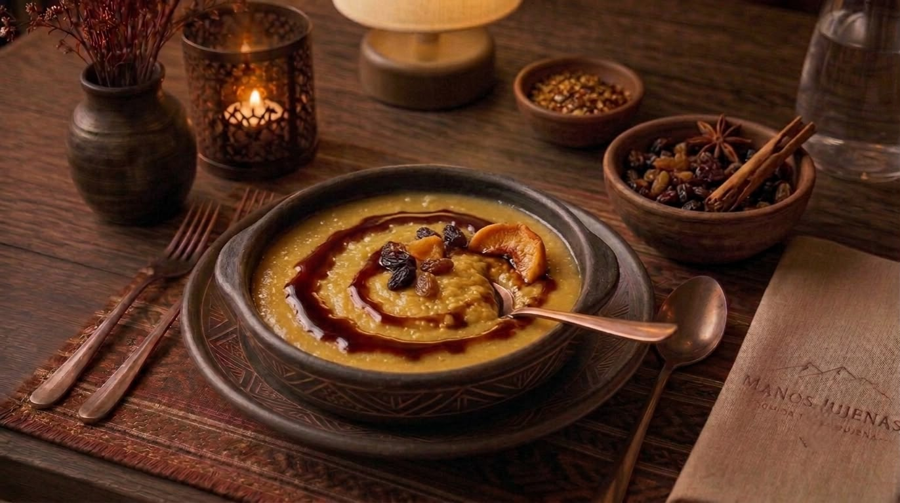

Postres

Cayote con Nueces
Dulce tradicional jujeño de cayote en almíbar, acompañado de nueces tostadas y un toque de canela.
$ 3.200

Quesillo con Miel de Caña
Quesillo artesanal fresco bañado en miel de caña, el postre más clásico y querido del norte argentino.
$ 3.500

Buñuelos
Esponjosos buñuelos fritos con masa suave, espolvoreados con azúcar impalpable y servidos con miel de caña.
$ 2.800

Mil Hojas Jujeño
Capas de masa crocante rellenas con dulce de leche artesanal y crema, con un toque de nuez molida por encima.
$ 4.000

Anchi
Postre ancestral de harina de maíz tostado, cocido a fuego lento con leche, azúcar y canela. Un sabor que remonta a las raíces de la Puna jujeña.
$ 4.500

Ensalada de Frutas
Frutas frescas de estación con jugo de naranja natural, menta y un toque de miel de caña de la región.
$ 2.500